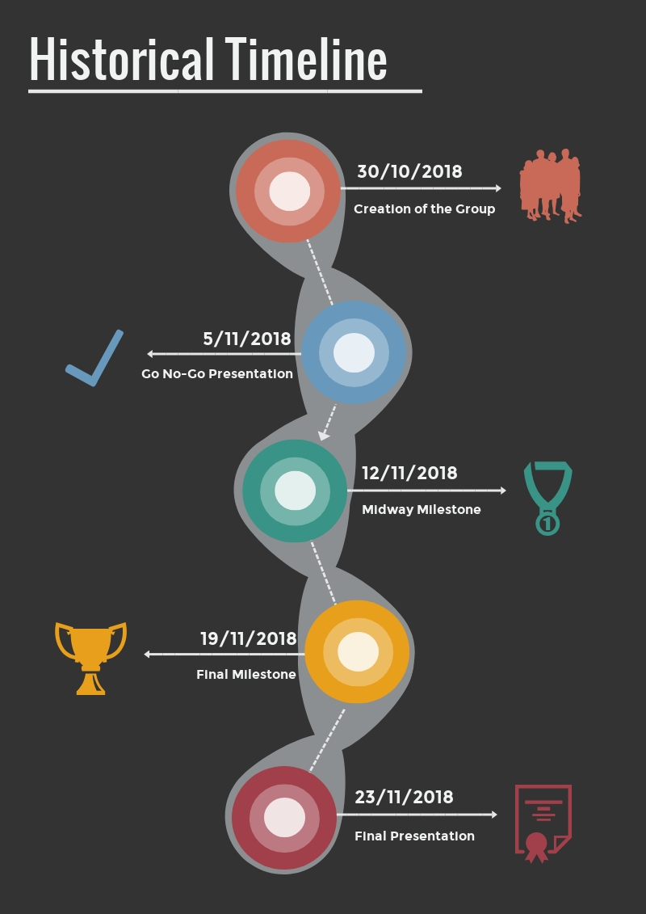

This is the final project of the course “Software Atelier 1” hosted by the University of Lugano.
For this project, the informatics students of the first year got divided into two groups,
each made up of 25 students.
The goal of this project was to put into practice all the skills obtained during the entire
duration of this course: Latex, HTML, CSS, Unix Shell and SVN.
The students had about 4 weeks to develop, from the ground up, this 100 pages website.
A great coordination was needed to develop
such a big website in such a short time. For this reason some students had to take care of
specific tasks, such as managing the SVN repository and developing the CSS templates.
Our topic (Unix Shell) got divided into three macro sections, each taking care of a
number of commands based on their advancement level, therefore there is a basic,
intermediate and advance section commands.
Each macro section had its own leader, that was responsible for overseeing the conduct
of the other team members within his group.
hen each team leader reported back to group leader, that was responsible for the success
of the entire project.
The ultimate goal of this website is to provide, to the future first-year students,
a useful and human readable guide that can guide
them through the learning process of this fundamental tool. This website in intended
to be a guide that can be followed, understood and
found interesting by anyone, since it starts from the really basic concepts of the shell,
all the way to the most advanced and foremost commands.